Result Viewer#
Once initialization, preprocessing, and model training have been performed, the results can then be viewed using this option. The results display interface can be understood in three main divisions:
the accuracy and model performance (initial screen)
the model performance across the selected hyperparameters
results concerning the individual features in the analysis
Accuracy and model performance#
See {numref}(fig:Display_ClassPlot): The performance of a model can be fundamentally described by the degree to which the predictions match the target scores (e.g., how many people are classified correctly or how closely the features and target are related in a regression). In NeuroMiner, this is represented in multiple ways that each address a different aspect of the relationship between subjects, predictions, and targets.
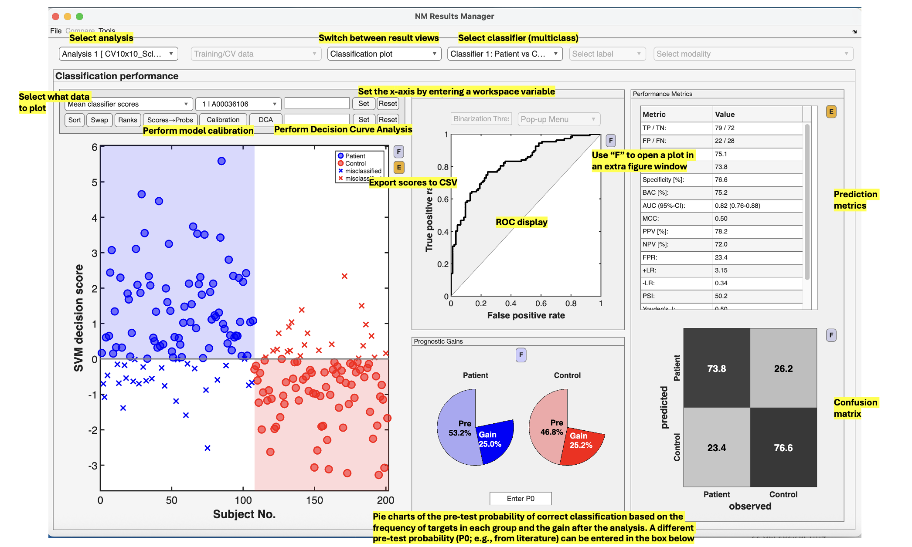
Fig. 12 Result viewer option 1: Classification plot#
Model comparisons#
The user can perform statistical or visual comparisons when there is more than one analysis:
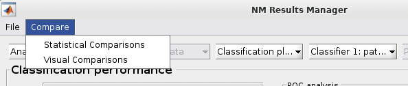
See {numref}(fig:NM_resultviewer_statistical_comparison): Statistical comparisons can be conducted between the model performances using a variety of statistics using the ”Statistical Comparisons” option. The results of these comparisons are output in either excel spreadsheet files (i.e., xlsx) or in text files (i.e., csv) for Linux and Mac. The menu is quite intuitive (i.e., as below) where you select the analyses you want to compare on the right, you press the ”Save As” button to choose a name, and then you select the ”Compare” button to generate the files. The files will be generated in your working directory.
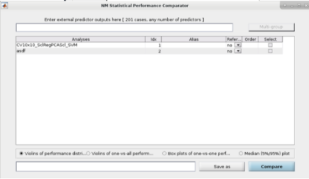
Fig. 13 Within the main results display, the user can go to the ”Comparisons” menu item and then select the option to calculate statistical differences between separate models#
See Fig. 14: The user can also perform ”Visual Comparisons”. The user needs to select some performance measures that they want to compare visually in the top-half of the pop-up box using the ”Select” column tick-boxes, then select the analyses in the lower-half of the pop-up box. Then simply press ”Visualize”. If the bar plots are not good then the user can change it to ”Line plots” and then press ”Visualize” again.
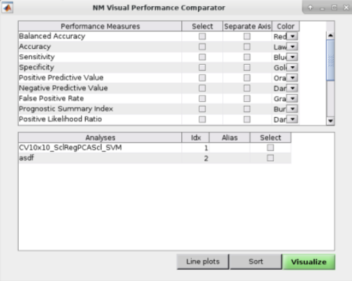
Fig. 14 Within the main results display, the user can go to the ”Comparisons” menu item and then select the option to display visual comparisons between separate models#
Note
Due to incompatibilities of MATLAB’s App Designer with MATLAB versions older than R2021a, this model comparison tool only works in MATLAB R2021a and newer versions.
Classification performance#
See Fig. 15: NeuroMiner was built to work with hyperparameter optimization within a nested-cross validation framework as a standard. In this plot, you will see the inner-cycle, CV1, mean test performance plotted in blue and then the outer cycle, CV2, mean test performance plotted in red. Each point represents a hyperparameter combination. This gives an indication of how the hyperparameter combinations are influencing the test performance. On the right, the display also shows heatmaps that show how the performance in the CV1/CV2 folds changes over the permutations.
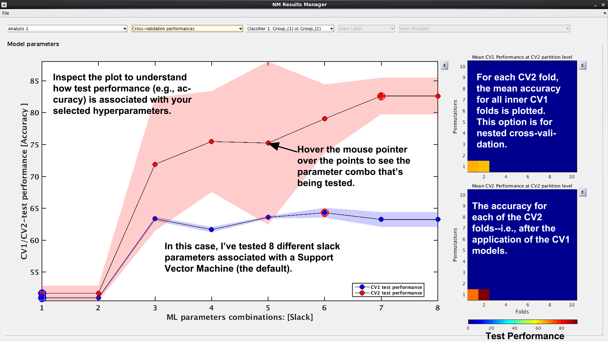
Fig. 15 Result viewer: Cross-validation performance#
Generalization error#
See Fig. 16: Another way to look at CV2 test performance is with the generalization error, which is calculated in NeuroMiner as the CV1-test performance minus the CV2 test performance.
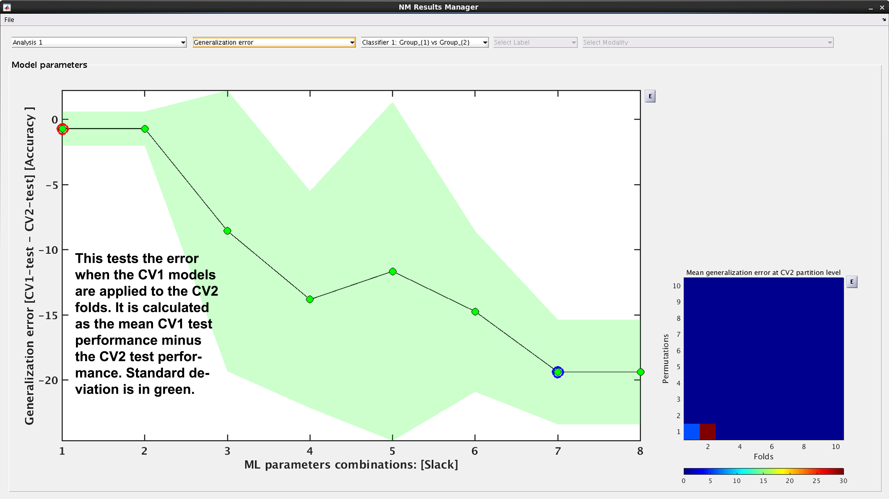
Fig. 16 Result viewer: Generalization error#
Model complexity#
See Fig. 17. In NeuroMiner, complexity is defined as the percentage of support vectors divided by the number of subjects in the tested fold. This feature is useful to determine how varying parameter combinations may affect the fit of the model.
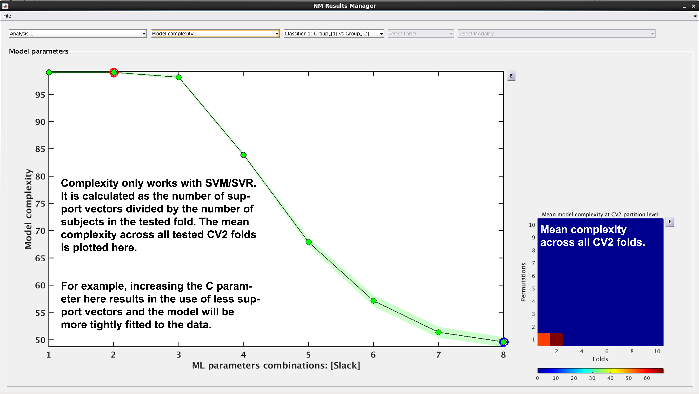
Fig. 17 Result viewer: Model complexity#
Note
Model complexity can only be calculated for LIBSVM and RVM, but not for LIBLINEAR.
Ensemble diversity#
See Fig. 18: This is a measure of Shannon entropy across CV1 models for each CV2 partition. A higher entropy means higher disagreement between the CV1 models. This measure is useful because increased entropy will often result in a better fitting model at the CV2 level. It is useful to note that entropy can be maximized as a performance criterion in addition to accuracy.
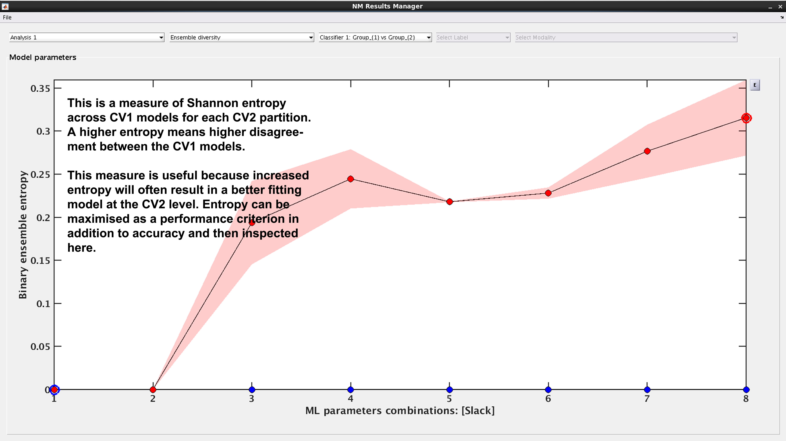
Fig. 18 Result viewer: Ensemble diversity#
Model selection frequency#
See Fig. 19: Within an ensemble framework, the models that are selected within the inner, CV1, cycle are then applied to the outer test data. For example, if it is a 10x10 CV1 framework with a winner-takes-all method of model selection, then 100 models will be applied to the held-out CV2 test fold. This plot displays the percentage of times that each parameter combination was selected.
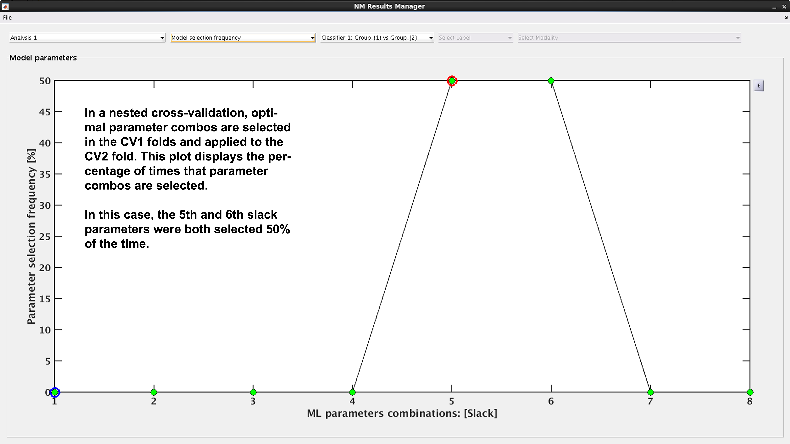
Fig. 19 Result viewer: Model selection frequency#
Multi-group results#
If a multi-group analysis is conducted the results display will change to accommodate the groups. There will be a result section for each classifier and one results section for the multigroup model (see Fig. 20).
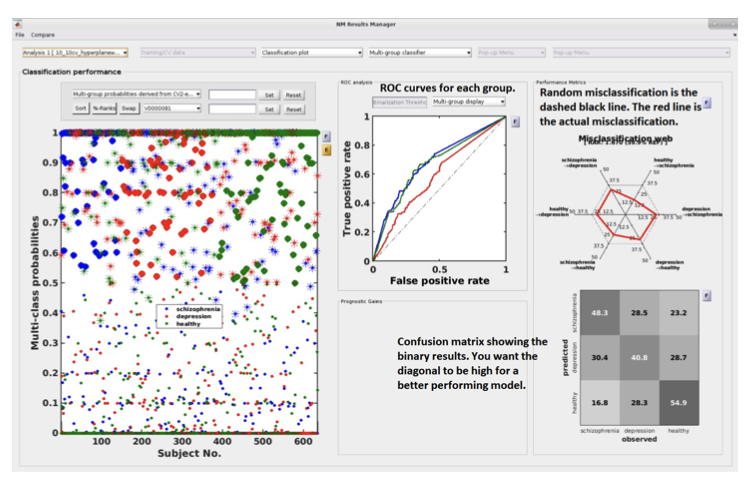
Fig. 20 Result viewer: Multi-group display#
Important
It is important to note that in the misclassification web the red dots are determined by which label (the one above) is misclassified as which label (the one at the bottom). Every corner represents one type of misclassification. The random classification line (the black dashed line) represents the random classification percentage. It differs based on the number of groups in the analysis. For a three-class analysis, it is represented by 6 points at 33%.
Scores –> Probabilities & Calibration (NM 1.4)#
Many machine learning models, such as Support Vector Machines (SVMs), produce decision scores rather than probabilities. While these scores are excellent for ranking subjects (e.g., who is most likely to be a patient), they are not well-calibrated. A score of “0.8” does not mean there is an 80% chance of being in the positive class.
Probability calibration is a post-processing step that corrects this. It builds a mapping model that converts these arbitrary decision scores into probabilities. A well-calibrated model is one where a prediction of “80% probability” means that, out of all cases given that score, 80% of them actually belong to the positive class.
NeuroMiner applies this calibration by training a calibration model on the CV1 training scores and then applying it to the CV1/CV2 test scores. It offers three distinct methods for this transformation. If you want to convert scores to probabilities in the classification plot and export them, press Scores –> Probabilities. Probability scores will be appended to the Output.csv File which you can export by clicking E next to the classification plot after calibration. To check the quality of calibration of the model, press Calibration.
1. Calibration Methods#
Platt Scaling#
This method fits a simple logistic regression (sigmoid) model to the classifier’s output scores. It assumes that there is a sigmoidal relationship between the scores and the true probabilities.
How it Works: It learns an S-shaped curve to map scores onto the [0, 1] probability interval.
Pros: It’s a parametric method, making it robust and less prone to overfitting, especially on smaller datasets. The NeuroMiner implementation also automatically includes class weights to correct for unbalanced data.
Cons: If the true relationship between scores and probabilities is not sigmoid-shaped, this method can be less accurate than non-parametric alternatives.
Isotonic Regression#
This is a more flexible, non-parametric method. It fits a non-decreasing, step-wise function to the data. It makes no assumptions about the shape of the relationship between scores and probabilities, other than that it should be monotonic (i.e., as the score increases, the probability should not decrease).
How it Works: It essentially learns a set of “steps” that best map scores to probabilities.
Pros: Its flexibility allows it to correct for any monotonic distortion, often making it more accurate than Platt scaling on larger datasets.
Cons: Because it’s non-parametric, it requires more data and can be more prone to overfitting on very small datasets.
Bayesian Binning into Quantiles (BBQ)#
This is a modern, non-parametric method that groups scores into bins of equal size (quantiles) and then uses a Bayesian averaging approach to estimate the probability within each bin.
How it Works: It creates a “smart histogram” of the scores and calculates a robust probability for each bin.
Pros: It is designed to be both flexible and robust, often providing a good balance between the properties of Platt scaling and Isotonic regression.
Cons: It is a more complex method conceptually.
2. Recompute Calibration#
This is a checkbox that is only active if a calibration has been performed previously for the current analysis. By default, NeuroMiner will reuse a previously computed calibration model to save time. Check this box if you have changed something about the data (e.g., selected a different subset of subjects) and want to force the tool to re-learn the calibration model from scratch using the current data configuration.
3. Offset Removal (OOCV Only)#
Note
This option only appears when you are viewing Out-Of-Cross-Validation (OOCV) data.
This feature is used to correct for a potential “domain shift” or “batch effect” where the distribution of classifier scores for the OOCV dataset is systematically different from the training dataset. It works by aligning the median of the OOCV scores with the median of the training scores.
None: No offset correction is applied.
Remove offset using [Group 1] data: Calculates the median score from Group 1 subjects only in both the training set and the OOCV set, and then shifts the OOCV scores to align the medians.
Remove offset using [Group 2] data: Same as above, but uses Group 2 subjects only.
Remove offset using all training data: Calculates the median using all subjects in the training and OOCV sets to perform the alignment.
Automatic Behavior#
There are cases where you will not see the interactive dialog box:
Probabilistic Classifiers: If the machine learning algorithm you used (e.g., Logistic Regression, Naive Bayes) already produces probabilities (handles.params.probflag is true), the calibration step is automatically skipped. The raw probabilities from the model are used directly.
Pre-specified Method: If the calibration method is already defined in a script or batch process, the function will run non-interactively using the specified method.
Interpretation#
After calibration, you can view a reliability plot. A perfectly calibrated model will have a curve that lies along the main diagonal. The Expected Calibration Error (ECE) quantifies the deviation from this ideal line.
Note
Choosing a Method: For small N, Platt Scaling is often the safest and most robust choice. For larger N, Isotonic Regression or BBQ are more powerful and may yield better-calibrated probabilities.
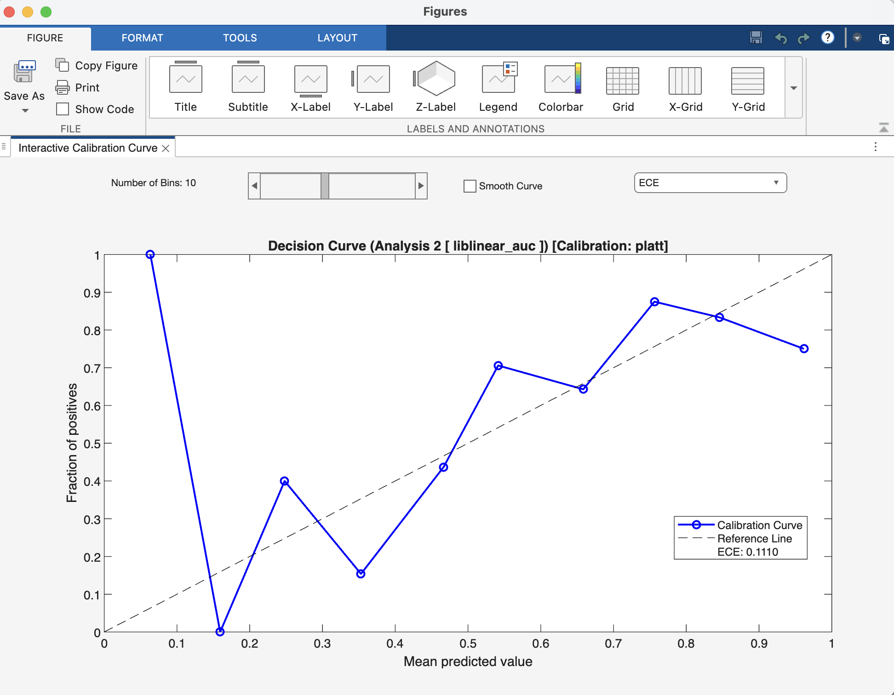
Fig. 21 Result viewer: Calibration Figure Window#
Decision‑Curve Analysis#
While metrics like accuracy and AUC measure a model’s statistical performance, Decision-Curve Analysis (DCA) answers a more practical question: “Is this model clinically useful?” It evaluates whether using a model to make decisions does more good than harm compared to simple, default strategies.
DCA achieves this by plotting the Net Benefit of a model across a range of probability thresholds.
What is Net Benefit? Net Benefit is the primary metric in DCA. It combines the benefits of correctly identifying positive cases (true positives) with the harms of incorrectly identifying negative cases as positive (false positives).
Think of it this way: the benefit of a model is finding patients who need treatment. The cost is subjecting healthy individuals to unnecessary treatment. Net Benefit subtracts this cost from the benefit. The formula is structured so that the “cost” of a false positive is weighted by the probability threshold, reflecting how a clinician might balance risks and rewards.
Interpretation#
A DCA plot has three key curves, which are the direct outputs of the nk_DCA function:
The Model Curve (netBenefits): This is the main curve, showing the net benefit of using your model’s predicted probabilities to make decisions at every possible threshold.
The “Treat All” Line (treatAll): This line represents the net benefit of a simple policy where you ignore the model and apply the intervention (e.g., treatment) to every single person.
The “Treat None” Line (treatNone): This is always a horizontal line at a net benefit of zero. It represents the baseline strategy of applying the intervention to no one.
The Decision Rule: To interpret the plot, you choose a threshold probability on the x-axis that represents a clinically acceptable risk. For example, a clinician might decide to act only if a model predicts a >20% chance of disease. At that chosen threshold, the best strategy is the one with the highest curve.
Your model is considered clinically useful if its curve is above both the “Treat All” and “Treat None” lines within a range of clinically relevant and reasonable thresholds. If the “Treat All” line is highest, it suggests the condition is common or serious enough that everyone should be treated. If the model’s curve is below the “Treat None” line, it means the model is doing more harm than good.
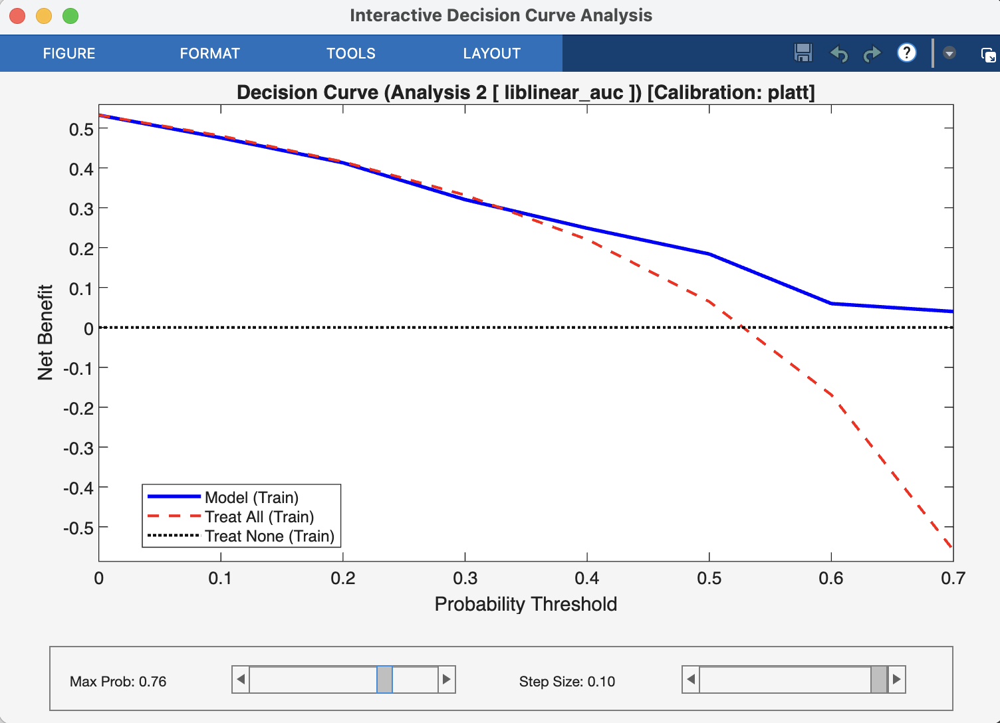
Fig. 22 Result viewer: Decision Curve Analysis Window#